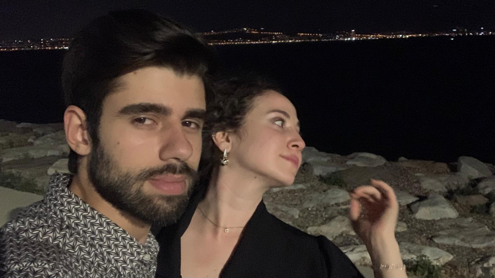

- İlk Buluşmamız
- 365 Gün Önce Bugün
- Mutluluğun Resmi
- Dünyaların Benim Olduğu An
- Tatlı Bir Sahil Yürüyüşü
- Bulduğum Yerde Bırakmıyorum
- Dünyalar Güzeli Sevgilimden Öpücük
- Ders Çalışma Günümüz
- Aşkım ve renkli gömleğim
- İlk Konserimiz
- Forum Bornova Hatırası
- Kova Şapka
- Güzel Bir Geceden Kalan Esintiler
- En Anlamlı Doğum Günüm
- İlk Sinema Günümüz
- Hayvanat Bahçesinde İki Kaşif
- Ders Çıkışı Ziyareti
- Foça Gezintisi
- Foça
- Çimenlik Kalesi
- İlk Tatilimiz
- Güzelim ile baş başa
- Huzur dolu bir an
- Çanakkale Boğazına Bakış
- Aynalı Çarşı
- Gülüşüne Bittiğim Kadın
- Tatlı Bir Çift
- Çanakkale'nin Bir Ucunda
- Balım ve Mutluluktan Uçan Kalbi
- Beyazlar Arasında
- Bornova
- Bir Antrenman Dönüşü
- Bugs-Lola Bunny
- Çiçeğime bir Buket
- Tatlı bi gizli çekim
- İyi ki doğmuş Sevgilim
- Çiçekçi Kıızz
- İzmir Saat Kulesinde
- Yook uyumom
- Arabalı Maceralar
- Yeniyoruum
- Beyazlar Arasında
- Yılbaşı Güzeli
- Bursa Gezimiz
- Öpmeye Doyamadığım
- Karların Arasında
- Ayvalık Sokakları
- Aynalar
- İlk Sevgililer Günümüz
- Uyuyan Güzel
- Aşkım İle Araba Maceraları
- Gözlerin Çok Güzel
- Birazdan Bir Yerlerde Olmamız Gerekiyormuş
- Canım Sevgilim
- Papatya Güzeli
- Yolcumuzu Karşılama
İlk Buluşmamız
O günü hatırlıyor musun? ❤️

365 Gün Önce Bugün
Birlikteliğimizin Başlangıcı
Mutluluğun Resmi
Nasıl heyecanlı olduğumu hala unutamıyorum
Dünyaların Benim Olduğu An
Tatlı Bir Sahil Yürüyüşü
Bulduğum Yerde Bırakmıyorum
En küçük noktadan kocaman bir öpücük almak benim hakkım
Dünyalar Güzeli Sevgilimden Öpücük

Ders Çalışma Günümüz
Aşkım ve renkli gömleğim
Yürüyüşün ardından bizim bankımızda
İlk Konserimiz
Spot ışıklarının altında kampüsün ortasında
Forum Bornova Hatırası
Kova Şapka
Şapkalar da bebeğime ne güzel yakışır
Güzel Bir Geceden Kalan Esintiler
En Anlamlı Doğum Günüm
Düşünceli sevgilimin doğum günü sürprizi
İlk Sinema Günümüz
Hayvanat Bahçesinde İki Kaşif
Ders Çıkışı Ziyareti
Foça Gezintisi
Foça
Çimenlik Kalesi
İlk Tatilimiz
Deniz Kum Güneş
Güzelim ile baş başa
Huzur dolu bir an
Çanakkale Boğazına Bakış
Aynalı Çarşı
Çarşının en güzel kızı ile
Gülüşüne Bittiğim Kadın
Tatlı Bir Çift
Çanakkale'nin Bir Ucunda
Balım ve Mutluluktan Uçan Kalbi
Beyazlar Arasında
Tekrar beyazlarla görmek üzere
Bornova
T-shirti ters giydiğim gün (ne bileyim ben baskı önde olur sandım)
Bir Antrenman Dönüşü
Sonrasında Çorba İçmeye
Bugs-Lola Bunny
Kurnaz Tavşan
Çiçeğime bir Buket
Tatlı bi gizli çekim
İyi ki doğmuş Sevgilim
İyi ki benim olmuş
Çiçekçi Kıızz
İzmir Saat Kulesinde
İzmir'li olup bir tane fotoğrafımız olması
Yook uyumom
Dizi izlerken gözlerini dinlendiren(uyuyan) sevgilim
Arabalı Maceralar
Yeniyoruum
ve bu durumdan gayet memnunum
Beyazlar Arasında
Pembe bir Tavşan
Yılbaşı Güzeli
Bursa Gezimiz
Tur Arası Fotoğraf Molası

Öpmeye Doyamadığım
Çok güzel napim
Karların Arasında
Biraz önce dans etmemiş gibi
Ayvalık Sokakları
Yılbaşı Neşesi
Aynalar
Bizi Seviyorlar
İlk Sevgililer Günümüz
Çok Şık Çok Güzel Unutulmaz Bir Akşam
Uyuyan Güzel
Mışıl mışıl uyuyan sevgilim (foturafı silmicem)
Aşkım İle Araba Maceraları
Usta Şoför Gülümsemesi İçimizi Güven Dolduruyor
Gözlerin Çok Güzel
Gözlerinin Güzelliğinde Kaybolmuşum
Birazdan Bir Yerlerde Olmamız Gerekiyormuş
Ama Önce Kahve
Canım Sevgilim
İlk Seminerimde Beni Yalnız Bırakmayan Aşkım
Papatya Güzeli
Umarım Güzel Kokuyordur
Yolcumuzu Karşılama
Çanakkale Yolcumuz İzmir'e İniş Yapmıştır Bolca Öpücük ve Sevgi ile karşılanmalı